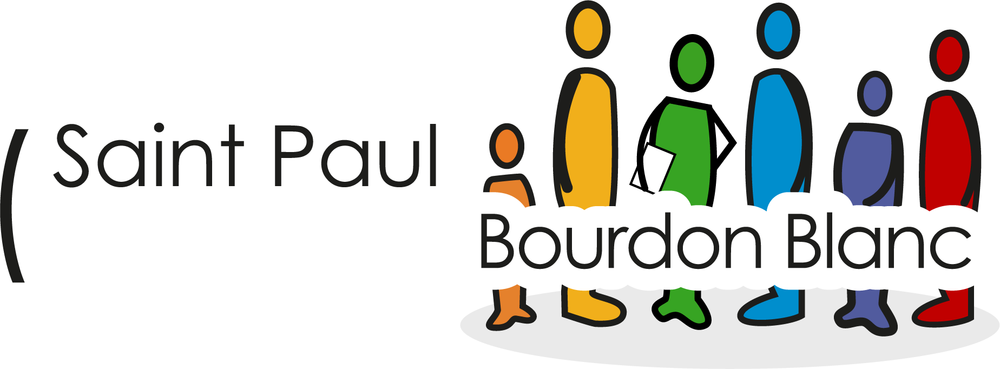

Profil
FORICHON Tom
BTS SIO SISR | Solutions d'Infrastructure, Systèmes et Réseaux
$ whoami
Étudiant en BTS SIO option SISR au Lycée Saint Paul Bourdon Blanc, passionné par la cybersécurité et l'administration systèmes & réseaux. Certifié eJPT (INE Security) et Voltaire. Classé top 223 sur Root-Me, 2ème au CTF Hack'N Game et 3ème aux WorldSkills Cybersécurité.
$ cat /etc/skills
Formations

BTS SIO - Option SISR
Lycée Professionnel Saint Paul Bourdon Blanc
Services Informatiques aux Organisations, option Solutions d'Infrastructure, Systèmes et Réseaux. Administration réseau, virtualisation, cybersécurité, gestion de parc et déploiement de services. Brevet de Technicien Supérieur | En cours d'obtention.
Baccalauréat Professionnel Système Numérique
Lycée Professionnel Saint Paul Bourdon Blanc
Baccalauréat Professionnel Système Numérique. Obtenu avec la Mention Assez Bien.
Expériences Professionnelles
CTF - Hack'N Game
Organisé par Root-Me
- 2ème du classement général
- Analyse de log et détection d'anomalies
- Injection XSS et SQL
- Analyse mémoire (forensics)
WorldSkills - Cybersécurité
En partenariat avec Root-Me
- 3ème du classement
- Épreuves de cybersécurité en conditions réelles
- Compétition nationale de sécurité informatique
Stagiaire - I.MEDIA
I.MEDIA
- Migration de données
- Installation / Réinstallation Windows
- Installation de logiciel
- Démontage de matériel informatique
- Changement de composant d'ordinateur
Stagiaire - URSSAF
URSSAF
- Installation de matériel informatique
- Inventaire du matériel GLPI
- Mise à jour de logiciel
- Paramétrage de pare-feu
- Masterisation d'un ordinateur
- Mise à jour BIOS
Administrateur Systèmes & Réseaux - FFSS 45
Fédération Française de Sauvetage et de Secourisme · Loiret
- Remplacement du routeur existant par un équipement UniFi
- Installation et configuration d'un point d'accès UniFi avec SSID multiples + portail captif
- Segmentation VLAN (Admin, Formation, Invités, IoT)
- Authentification 802.1X via serveur RADIUS pour le réseau interne
- Rédaction de la documentation technique et formation des référents
Projets
Infrastructure réseau IUT'O
Projet d'infrastructure complète pour l'IUT d'Orléans : domaine Active Directory, gestion de parc avec GLPI, supervision Zabbix, déploiement automatisé des postes avec FOG, centralisation des logs via Grafana Loki et XDR Wazuh, serveur de fichiers et serveur d'impression, serveur de messagerie iRedMail et Nextcloud, automatisation via Ansible, pare-feu Stormshield et switching Cisco.
Learning Tree
Mise en place d'un environnement réseau sécurisé orienté collaboration : domaine Active Directory pour la gestion centralisée des utilisateurs et des droits, partage de fichiers via WebDAV, configuration des règles de filtrage et de NAT pour exposer les services tout en isolant le réseau interne.
BEG
Déploiement d'une infrastructure réseau pour le Bureau d'Études BEG : installation et administration d'un Active Directory, mise en place d'un partage de fichiers WebDAV pour les équipes, et configuration du filtrage et du NAT au niveau du pare-feu pour sécuriser les accès entrants et sortants.
Certifications
eJPT - Junior Penetration Tester
INE Security (eLearnSecurity)
Obtenue
Tests d'intrusion, exploitation, reconnaissance
Certification Voltaire
Projet Voltaire
Obtenue
Maîtrise de la langue française
Root-Me - Top 223
Root-Me.org · Neyzz
Actif
Classement national top 223
BTS SIO SISR
Lycée Saint Paul Bourdon Blanc
2024 - 2026
Option SISR - Bac+2
Veille Technologique
Ma veille technologique porte sur l'utilisation de l'intelligence artificielle dans la cybersécurité : automatisation des SOC, IA agentique, détection de deepfakes, menaces offensives liées à l'IA et affrontement IA contre IA dans la défense des systèmes d'information.
IA & Cybersécurité
Utilisation de l'intelligence artificielle dans la cybersécurité : automatisation des SOC, IA agentique, détection de deepfakes, menaces offensives liées à l'IA et guerre des machines.
Sélection d'articles — IA & Cybersécurité
Comment les compétences de l'agent IA OpenClaw sont armées pour livrer le malware Atomic Stealer
SOC Prime
Février 2026
Des compétences d'agents IA détournées pour distribuer des malwares : un cas concret de weaponisation de l'IA agentique à des fins offensives.
Qevlar AI : 30 millions de plus pour le spécialiste de l'automatisation des SOC
ZDNET France
Mars 2026
La startup française Qevlar AI lève 30 M$ pour accélérer l'automatisation des SOC par l'IA. Un signal fort de maturité du marché.
La cybersécurité à l'ère de l'IA en 2026 : enfin des chiffres intéressants (Darktrace)
ITforBusiness
Février 2026
Le rapport Darktrace fournit des données chiffrées clés sur l'état de l'IA en cybersécurité : adoption, menaces et tendances du marché.
La cybersécurité entre dans l'ère de la guerre des machines
Alliancy
Mars 2026
Analyse de l'affrontement IA contre IA en cybersécurité : quand les défenses automatisées font face aux attaques pilotées par l'intelligence artificielle.
5 outils de détection des deepfakes pour protéger les utilisateurs professionnels
LeMagIT
Février 2026
Comparatif pratique de 5 solutions de détection de deepfakes destinées aux professionnels : fonctionnalités, limites et cas d'usage.
Datadog Bits AI Security Analyst : un agent d'investigation autonome intégré à Cloud SIEM
IT Social
Mars 2026
Datadog intègre un agent IA autonome dans son Cloud SIEM pour automatiser les investigations de sécurité. L'IA agentique au service du SOC.